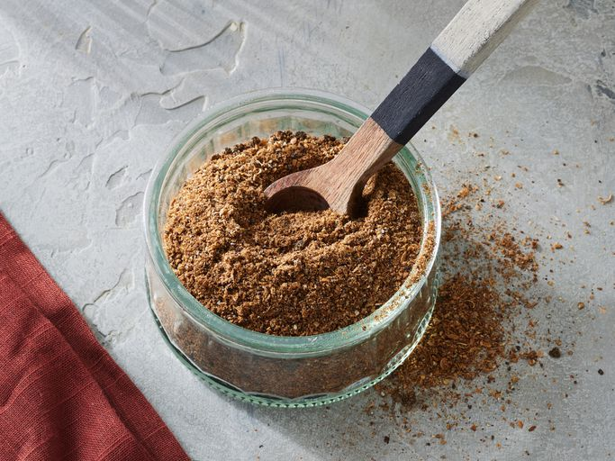

Garam Masala Recipe

Garam masala is an Indian spice blend. Garam means "hot" while masala means "spices," but it's not necessarily hot and spicy — the name refers to the warm flavors of its ingredients, such as cinnamon and cumin.
Ingredients
- 1 tablespoon ground cumin
- 1 1/2 teaspoons ground coriander
- 1 1/2 teaspoons ground cardamom
- 1 1/2 teaspoons ground black pepper
- 1 teaspoon ground cinnamon
- 1/2 teaspoon ground cloves
- 1/2 teaspoon ground nutmeg
Directions
- Gather all ingredients.
- Mix cumin, coriander, cardamom, pepper, cinnamon, cloves, and nutmeg in a bowl.
- Place mix in an airtight container, and store in a cool, dry place.
Home